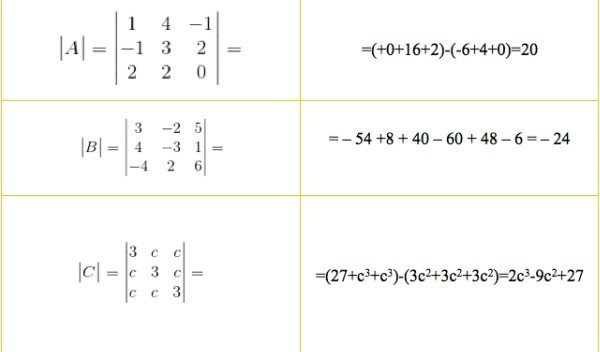
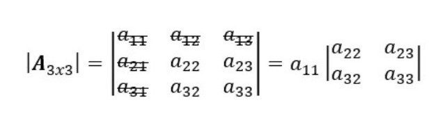
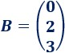
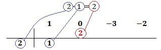
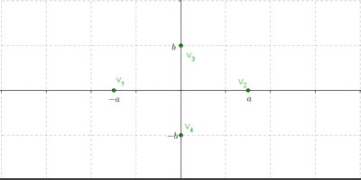

Matrices
Una matriz es un arreglo de números ordenado, que consiste en una serie de filas y columnas, de modo que cada elemento ocupa una posición y puede ser identificado por su número de fila y de columna.
Dadas dos matrices podremos realizar ciertas operaciones entre ellas siempre que cumplan determinadas condiciones.
El origen de las matrices es muy antiguo. Los cuadrados latinos y los cuadrados mágicos se estudiaron desde hace mucho tiempo. Un cuadrado mágico, 3 por 3, se registra en la literatura china hacia el 650 a. C.
Suma de matrices
La matriz suma se obtiene sumando los elementos de las dos matrices que ocupan la misma misma posición.
Si las matrices A = (aij) y B = (bij) tienen la misma dimensión, la matriz suma es:
A + B = (aij + bij)
Propiedades de la suma de matrices
Interna
La suma de dos matrices de orden m x n es otra matriz dimensión m x n. El resultado de la matriz suma tendrá el mismo número de filas y columnas que las que se suman.
Asociativa
La propiedad asociativa de la suma para las matrices establece: Digamos que A, B, y C son matrices m × n. Entonces, (A + B) + C = A + (B + C).
A + (B + C) = (A + B) + C
Elemento neutro
A + 0 = A
Donde O es la matriz nula de la misma dimensión que la matriz A.
Elemento opuesto
La matriz opuesta es aquella en que todos los elementos están cambiados de signo.
Conmutativa
A + B = B + A
Ejemplos:
Para mayor explicación, dirígase a los recursos multimedia.
Resta de matrices
Para comprender la noción de resta de matrices, primero debemos saber qué son las matrices en el ámbito de la matemática. Una matriz es una serie de símbolos y/o números que se ubican en líneas verticales y horizontales y que se disponen como rectángulo.
Cada uno de los números que componen este arreglo en dos dimensiones al que llamamos matriz se denomina entrada, y debe estar ordenado en filas (que también se conocen con el nombre de renglones) y columnas, como se menciona en el párrafo anterior. La forma de referirse a una matriz con un número n de filas y uno m de columnas es matriz n x m (nótese que la x es el signo de multiplicación, por lo cual se lee “por”).
Es importante señalar que las matrices tienen diversas aplicaciones, algunas de las cuales se resumen a continuación:
Para restar dos matrices, por lo tanto, se deben restar entre sí aquellos componentes que se sitúan en la misma posición. Tomemos el ejemplo de esta primera imagen, con sus dos matrices.
En este caso, siguiendo con la definición que dimos líneas arriba, deberíamos completar los siguientes pasos para resolver la operación. Comenzamos con la primera columna (es decir, con los números en sentido vertical):
2 – 6 = – 4
3 – 2 = 1
.
5 – (–1) = 6
Luego seguimos con la segunda columna:
5 – (–2) = 7
2 – 4 = – 2
– 6 – 8 = – 14
Finalmente, restamos los elementos de la tercera columna:
– 4 – 3 = – 7
1 – 5 = – 4
3 – 5 = – 2
De este modo, sólo nos queda ordenar los números para obtener el resultado de esta resta de matrices, tal y como se en la imagen de arriba.
Ejemplos:
Multiplicación
Dos matrices A y B son multiplicables si el número de columnas de A coincide con el número de filas de B.
Mm x n x Mn x p = M m x p
Ejemplo:
En este caso, ambas matrices son de 3 filas por 3 columnas, por lo que las hace multiplicables entre sí; su resultado va a ser el de la matriz C, también una matriz de 3x3.
El elemento cij de la matriz producto se obtiene multiplicando cada elemento de la fila i de la matriz A por cada elemento de la columna j de la matriz B y sumándolos.
Propiedades de la multiplicación de matrices
Asociativa
A · (B · C) = (A · B) · C
Elemento neutro
A · I = A
Donde I es la matriz identidad del mismo orden que la matriz A.
No es Conmutativa
A · B ≠ B · A
Distributiva del producto respecto de la suma
A · (B + C) = A · B + A · C
Para más información, haga clic sobre el siguiente enlace: //n9.cl/imkcm
Determinantes
El determinante de una matriz cuadrada es un número que se obtiene como resultado de realizar una serie de operaciones con sus elementos. De este valor se pueden deducir importantes propiedades de los elementos que lo componen. Tiene, además, muchas aplicaciones en la Geometría y el Álgebra.
Llamamos determinante de orden 1 o determinante de primer orden al valor del determinante de una matriz de dimensión 1x1.
Llamamos determinante de orden 2 o determinante de segundo orden al valor del determinante de una matriz de dimensión 2x2.
Para más información, haga clic sobre el siguiente enlace: //n9.cl/nmod3
Llamamos determinante de orden 3 o determinante de tercer orden al valor del determinante de una matriz de dimensión 3x3.
´
Para poder resolver determinantes, portamos de distintas formas o métodos que nos pueden resultar ante su resolución. Entre ellos, tenemos la regla de Sarrus.
Regla de Sarrus
La regla de Sarrus es un método usado para calcular el determinante de una matriz cuadrada de tercer orden. Recibe su nombre del matemático francés Pierre Frédéric Sarrus, que la introdujo en el artículo Nouvelles méthodes pour la résolution des équations, publicado en Estrasburgo en 1833.
La regla de Sarrus nos sirve para resolver de manera muy sencilla el determinante de una matriz de 3×3.
Si la matriz de 3×3 es:
Se calcula como:
Si nos fijamos, la mitad de los sumandos tienen signo + y la otra mitad signo -. En este caso los productos positivos están formados por los elementos de la diagonal principal y sus dos paralelas multiplicadas por el elemento que está en el extremo opuesto. De manera análoga, los productos negativos están formada por los elementos de la secundaria y sus paralelas multiplicadas por el elemento extremo de las mismas. A este método es al que se le conoce como la “regla de Sarrus”.
Las diagonales azules se suman y las diagonales rojas se restan. En este caso, el determinante es la zona sombreada de gris y hemos repetido las dos primeras filas en la zona inferior.
Ejemplos resueltos:

Para más información, haga clic sobre los siguientes enlaces:
//n9.cl/1a24x
//n9.cl/c1yho
Teorema de Laplace
La regla de Laplace es un método que permite calcular rápidamente el determinante de una matriz cuadrada con dimensión de 3×3 o mayor mediante una serie de expansión recursiva.
En otras palabras, la regla de Laplace factoriza la matriz inicial en matrices de menor dimensión y ajusta su signo en función de la posición del elemento en la matriz.
Este método se puede desarrollar mediante filas o columnas.
Explicación teórica para la regla de Laplace
Definimos A3×3 como:
Empecemos por el primer elemento a11. Rallamos las filas y columnas que integren a11. Los elementos que queden sin rallar, será el primer determinante menor multiplicado por a11.

Seguimos con el segundo elemento de la primera fila, es decir, a12. Repetimos el proceso: rallamos las filas y columnas que contengan a12.
Ajustamos el signo del menor:
Añadimos el segundo determinante menor al resultado anterior y formamos una serie de expansión, tal que:
Continuamos con el tercer elemento de la primera fila, es decir, a13. Repetimos el proceso: rallamos la fila y la columna que contengan a13.
Añadimos el tercer determinante menor al resultado anterior y ampliamos la serie de expansión, tal que:
Dado que ya no quedan más elementos en la primera fila, entonces cerrramos el proceso recursivo. Calculamos los determinantes menores.
De la misma forma que se han empleado elementos de la primera fila, este método también se puede aplicar con las columnas.
Ejemplo práctico para la regla de Laplace
Definimos R3×3 como:
Empecemos por el primer elemento r11 = 5. Rallamos las filas y columnas que integren r11 = 5. Los elementos que queden sin rallar, será el primer determinante menor multiplicado por r11 = 5.
Seguimos con el segundo elemento de la primera fila, es decir, r12 = 2. Repetimos el proceso: rallamos las filas y columnas que contengan r12 = 2.
Ajustamos el signo del menor:
Añadimos el segundo determinante menor al resultado anterior y formamos una serie de expansión, tal que:
Continuamos con el tercer elemento de la primera fila, es decir, r13 = 3. Repetimos el proceso: rallamos la fila y la columna que contengan r13 = 3.
Añadimos el tercer determinante menor al resultado anterior y ampliamos la serie de expansión, tal que:
El determinante de la matriz R3×3 es 15.
Para más información, haga clic sobre el siguiente enlace: //n9.cl/7pt8h
Sistema de ecuaciones
Se llama sistema de ecuaciones todo conjunto de ecuaciones distintas que tiene una o más soluciones comunes.
Resolver un sistema de ecuaciones simultáneas es hallar el conjunto de valores que satisfacen simultáneamente cada una de sus ecuaciones.
Sistemas de ecuaciones: regla de Cramer
La regla de Cramer proporciona la solución de sistemas de ecuaciones lineales compatibles determinados (con una única solución) mediante el cálculo de determinantes. Se trata de un método muy rápido para resolver sistemas, sobre todo, para sistemas de dimensión 2x2 y 3x3. Para dimensiones mayores, los determinantes son bastante más engorrosos.
Recordad que un sistema de ecuaciones puede escribirse en forma matricial como:
Donde:
A es la matriz de coeficientes del sistema,
X es la matriz con las incógnitas,
B es la matriz con los términos independientes de las ecuaciones.
Para poder aplicar Cramer, la matriz A tiene que ser cuadrada y regular (determinante distinto de 0).
La regla de Cramer establece que la incógnita xk de la solución del sistema, cuyos coeficientes están en la columna k de A, es:
Donde Ak es como la matriz A pero cambiando su columna número k por la columna de términos independientes.
Ejemplos de la regla de Cramer
Ejemplo 1
Sistema de dimensión 2x2:
Solución
La matriz de coeficientes del sistema es:
La matriz de incógnitas es:
La matriz de términos independientes es:
Calculamos el determinante de A:
Podemos aplicar la regla de Cramer.
La primera incógnita es x, cuyos coeficientes son los de la primera columna de A. La matriz A1 es como A pero cambiando dicha columna por la columna B:
Calculamos x:
La segunda incógnita es y. Sus coeficientes son los de la segunda columna de A. Tenemos que calcular el determinante de la matriz.
Calculamos y:
Por tanto, la solución del sistema es:
Ejemplo 2
Sistema de dimensión 3x3
Solución
La matriz de coeficientes del sistema es:
La matriz de incógnitas es:
La matriz de términos independientes es:

Calculamos el determinante de A:
Podemos aplicar la regla de Cramer.
La matriz A1 es como A pero cambiando la columna 1 por la columna B:
Calculamos x:
La matriz A2 es como A pero cambiando la columna 2 por la columna B:

Calculamos y:
La matriz A3 es como A pero cambiando la columna 3 por la columna B:
Calculamos z:
Por tanto, la solución del sistema es:
Para más información, haga clic en el siguiente enlace:
//n9.cl/841cb7
//n9.cl/tp8xv
Divisibilidad de polinomios
La divisibilidad algebraica posee diferencias con respecto a la divisibilidad numérica, diferencias que vamos a analizar y que se pueden considerar como muy importantes:
Cualquier polinomio entero es siempre divisible por cualquier número o constante, distinto de cero.
Los números o polinomios de grado cero actúan en la divisibilidad del polinomio lo mismo que lo hace la unidad en la divisibilidad numérica. (En la divisibilidad numérica, la unidad es divisor de cualquier número. En la divisibilidad algebraica, cualquier número es divisor de cualquier polinomio).
Ejemplo:
x² – 3x + 2 : 5 = 1/5x² – 3/5x + 2/5 (y puedes comprobar que el resto es 0).
Cualquier polinomio P(x) que sea divisible por otro polinomio Q(x), también es divisible por el divisor Q(x) multiplicado por un número cualquiera K distinto de cero.
O sea:
P(x) / Q(x) = C(x) ⇒ P(x) / K⋅Q(x) = 1/K⋅C(x) ⇒ P(x) / (1/K)⋅Q(x) = K⋅C(x)
Date cuenta que si multiplicamos el divisor por número, el cociente de la división sale siempre multiplicado por su inverso.
Si multiplicamos el dividendo P(x) de una división por un número K, la única alteración que se produce es que el resto resulta también multiplicado por la constante K.
Para más información, haga clic sobre el siguiente enlace: //n9.cl/dl7ii
Ruffini y factorización
La regla de Ruffini es un método o algoritmo que nos permite obtener las raíces de un polinomio. Es de gran utilidad ya que para grado mayor que 2 no disponemos de fórmulas, al menos fáciles, para poder obtenerlas.
Nota: la raíz de un polinomio es el número o valor que debe tomar la incógnita para que el polinomio sea igual a 0. Es decir, la regla de Ruffini nos permite resolver ecuaciones polinómicas.
Cada vez que hacemos una tabla a partir de los coeficientes del polinomio, obtenemos una raíz y los coeficientes de un polinomio de un grado menor (un polinomio que divide al propio polinomio). De este modo, podemos ir reduciendo el grado del polinomio hasta llegar a uno de segundo grado cuyas raíces sabemos calcular rápidamente mediante la fórmula correspondiente.
En realidad, el método consiste escoger una posible raíz y desarrollar una tabla. Si el último resultado de la tabla es 0, el procedimiento habrá finalizado correctamente. Si no es así, tendremos que probar con otra posible raíz.
A continuación, explicamos el método a través de ejemplos, calcularemos las raíces de polinomios de tercer y quinto grado de forma minuciosa y factorizaremos los polinomios.
Ejemplo de aplicación
Como primer ejemplo, vamos a buscar las raíces del siguiente polinomio de tercer grado:
x3−3x−2
O, dicho de otro modo, vamos a buscar las soluciones de la siguiente ecuación de tercer grado:
x3−3x−2=0
Aplicamos la regla de Ruffini:
Escribimos en la primera fila los coeficientes de cada monomio en orden decreciente de grado. Si hay algún coeficiente que sea 0 (en nuestro caso, es el coeficiente de x 2 ), también hay que escribirlo.
Ahora, buscamos un número que sea divisor del término independiente, es decir, del término que no tiene parte literal (ninguna x), y lo escribimos en la columna de la izquierda.
En nuestro polinomio el término independiente es -2. Podemos escoger cualquiera de sus divisores, que son 1, -1, 2 ó -2. Escogemos, por ejemplo, 2, que es divisor de -2 y tiene el signo contrario. Si no funciona, tendremos que probar con otro hasta dar con el bueno:
El primer coeficiente pasa a la parte inferior de la línea, sin realizar ninguna operación.
Ahora, multiplicamos el coeficiente que hemos bajado por el número de la columna izquierda y el resultado lo escribimos debajo del siguiente coeficiente, pero arriba de la línea.

Sumamos el número que hemos escrito con el coeficiente que tiene arriba y el resultado lo escribimos debajo de la línea:
Repetimos el proceso:
Multiplicamos el número obtenido por el de la columna izquierda y lo situamos debajo del siguiente coeficiente:
Sumamos el número que hemos escrito con el coeficiente que tiene arriba y el resultado lo escribimos debajo de la línea:
Multiplicamos el número obtenido por el de la columna izquierda y lo situamos debajo del siguiente coeficiente:
Sumamos el número que hemos escrito con el coeficiente que tiene arriba y el resultado lo escribimos debajo de la línea:
Es importante que el último número del proceso sea 0. Si no es así, significa que el número de la columna izquierda no nos sirve y debemos escoger otro.
La raíz del polinomio que hemos calculado está en la columna izquierda.
Tenemos la raíz x = 2.
Los números de debajo de la línea son los coeficientes de un polinomio de un grado menos (en nuestro caso, de grado 2).
El polinomio de un grado menor es:

Por lo tanto, la primera factorización es:
Y la raíz x = 2.
Si queremos calcular las otras raíces, aplicamos de nuevo el método al polinomio de un grado menos. En nuestro caso, como es de grado 2, usamos la fórmula para las ecuaciones cuadráticas:
Es una raíz doble.
La raíz queda:
Las dos soluciones que tiene la ecuación x3−3x−2=0 son x=2 y x=−1.
Para más información, haga clic sobre el siguiente enlace:
//n9.cl/kjt1m
//n9.cl/2phbi
//n9.cl/sfbhw
Secciones cónicas: Circunferencia y elipse
¿Qué son las secciones cónicas?
En geometría analítica, las secciones cónicas (o simplemente cónicas) son todas las curvas resultantes de las diferentes intersecciones entre un cono y un plano, cuando ese plano no pasa por el vértice del cono. Existen cuatro tipos de secciones cónicas: la circunferencia, la elipse, la parábola y la hipérbola.
A continuación tienes representadas gráficamente las 4 secciones posibles que se pueden obtener a partir de cualquier cono:
Tipos de secciones cónicas
Una vez visto el concepto de sección cónica, veamos cuáles son los tipos de secciones cónicas que existen: entre ellas tenemos la circunferencia y la elipse.
La circunferencia
La circunferencia es una sección cónica que se puede hallar cortando un cono con un plano perpendicular a su eje de revolución (paralelo a la base).
La circunferencia es la cónica más conocida, está formada por un centro y un radio.
También, la circunferencia es el lugar geométrico de los puntos del plano que equidistan de un punto fijo llamado centro.
Podemos hallar la ecuación una circunferencia cuando conocemos:
Tres puntos de la misma.
El centro y el radio.
Un punto y el centro.
El centro y una recta tangente.
Ecuación de la circunferencia
Ejemplos
Para más información, haga clic sobre el siguiente enlace: //n9.cl/acsye
La elipse
La elipse es una línea curva, cerrada y plana muy parecida a la circunferencia, pero su forma es más ovalada. En particular, es el resultado de cortar la superficie de un cono con un plano oblicuo cuyo ángulo respecto al eje de revolución es mayor que el de la generatriz.
Además, todos los puntos de una elipse cumplen con una condición: la elipse es el lugar geométrico de todos los puntos de un plano cuya suma de distancias a otros dos puntos fijos (llamados focos F y F’) es constante.
Ecuación de la elipse
Ejemplos
Para más información, haga clic sobre el siguiente enlace: //n9.cl/80dqy5
Secciones cónicas: Hipérbola
Dados dos puntos F1 y F2 llamados focos, se denomina hipérbola al conjunto de puntos del plano tales que el valor absoluto de la diferencia de sus distancias a los focos es constante.
H = {P(x,y)| |d(P;F1)–d(P;F2)| = 2a = cte}
Si la distancia entre los focos es d(F1,F2) = 2c, la condición para que sea una hipérbola es:
c > a > 0
c^2 > a^2
c^2 – a^2 = b^2
⇒ c^2 = a^2 + b^2

Ecuación canónica de la hipérbola
Con una deducción similar a la de la elipse, se obtiene:
Elementos de la hipérbola
Para trazar las asíntotas armemos un rectángulo auxiliar que ayudará a graficar la hipérbola, y luego tracemos las rectas que contienen a sus diagonales (esas rectas serán las asíntotas). Una vez trazadas las asíntotas, es sencillo realizar un gráfico aproximado de la hipérbola:


Ejemplo 1
Resolución
Grafiquemos lo obtenido hasta el momento:

Luego podemos dar las coordenadas de los vértices, de los focos y de las asíntotas:
La gráfica:
Ejemplo 2
Resolución
Grafiquemos:
Enlace del contenido: //aga.frba.utn.edu.ar/hiperbola/
Para más información, haga clic en el siguiente enlace: //n9.cl/wiho1
Inecuaciones
La desigualdad existente entre las dos expresiones algebraicas sólo se verifica, o más bien, solo es verdadera para determinados valores de la incógnita.
La solución de una inecuación formulada, significa determinar mediante ciertos procedimientos, el valor que la satisfaga.
Si formulamos la inecuación algebraica siguiente, podremos notar en ella los elementos señalados anteriormente. Veamos:
9x − 12 < 24
Como se puede visualizar en la ejemplo, en la inecuación existen dos miembros. Está presente el miembro de la izquierda y el miembro de la derecha. En este caso la inecuación está conectada a través del siglo menor que. El cociente 9 y los números 12 y 24 son los datos conocidos.
Clasificación de las inecuaciones
Existen diferentes tipos de inecuaciones. Estas, se pueden clasificar de acuerdo al número de incógnitas y de acuerdo al grado de ellas. Para saber el grado de una inecuación, basta con identificar el mayor ellos. Así, tenemos los tipos siguientes:
De una incógnita.
De dos incógnitas.
De tres incógnitas.
De n incógnitas.
De primer grado.
De segundo grado.
De tercer grado.
De cuarto grado.
Inecuaciones de grado N.
Operando con inecuaciones
Antes de resolver un ejemplo de inecuaciones, conviene indicar las siguientes propiedades:
Cuando un valor que está sumando pasa a otro lado de la inecuación, se le pone un signo menos.
Si un valor que está restando pasa al otro lado de la inecuación se le pone un signo más.
Cuando un valor que está dividiendo pasa a otro lado de la inecuación, multiplicará a todo lo que haya en el otro lado.
Si un valor está multiplicando pasa al otro lado de la inecuación, entonces pasará dividiendo a todo lo que haya en la otra parte.
Es indiferente, pasar de lado izquierdo a derecho o de derecho a izquierdo de la inecuación. Lo importante es no olvidar los cambios de signo. Además, no importa hacia qué lado despejemos las incógnitas.
Ejemplo resuelto de inecuación
Para ver a fondo el proceso de resolución de una inecuación, vamos a plantear la siguiente:
15x + 18 < 12x -24
Para resolver esta inecuación debemos despejar la incógnita. Para ello, en primer lugar, se procede a agrupar los términos semejantes. Básicamente, esta parte consiste en pasar todas las incógnitas al lado izquierdo y todas las constantes al lado derecho. Así tenemos:
15x – 12x < -24 – 18
Sumando y restando estos términos semejantes. Tenemos:
3x < – 42
Finalmente, se procede ahora a despegar la incógnita y determinar su valor.
x < – 42/3
x < – 14
De esta forma todos los valores menores que -14 satisfacen correctamente la inecuación formulada.
Los sistemas de inecuación
Cuando se formulan conjuntamente dos o más inecuaciones, hablamos entonces de sistemas de inecuaciones. Un ejemplo de la formulación de un sistema de inecuación es el siguiente:
18x + 22 < 12x – 14 (1)
9x > 6 (2)
En este sistema han de cumplirse las dos inecuaciones para que el sistema tenga solución. Es decir, la solución son los valores de ‘x’ que permitan que se cumplan, al mismo tiempo, la inecuación (1) y la (2).
Ejemplo resuelto de sistema de inecuación
El proceso de resolución de un sistema de inecuación no resulta ser complicado, puesto para su resolución basta con resolver por separado cada una de las inecuaciones formuladas.
Para ver este proceso de resolución, tomemos como referencia el siguiente sistema de inecuación:
18x + 22 < 12x – 14
9x > -6
Resolvemos la primera inecuación del sistema, mediante el procedimiento vista en la resolución de inecuaciones:
18x – 12x < -22 -14
6x < -36
x < -36/6
x < – 9
Debe señalarse que no todos los sistemas de inecuaciones tienen solución.
Para más información, haga clic en el siguiente enlace: //n9.cl/gufnu